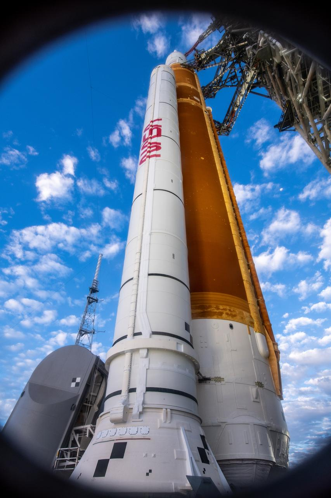
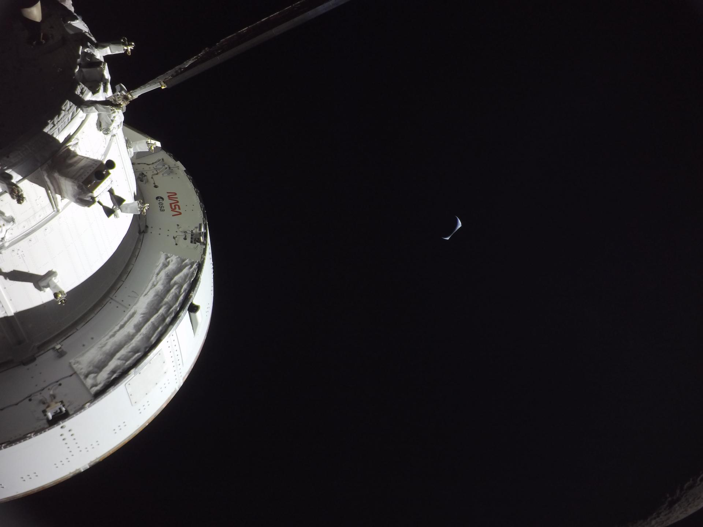
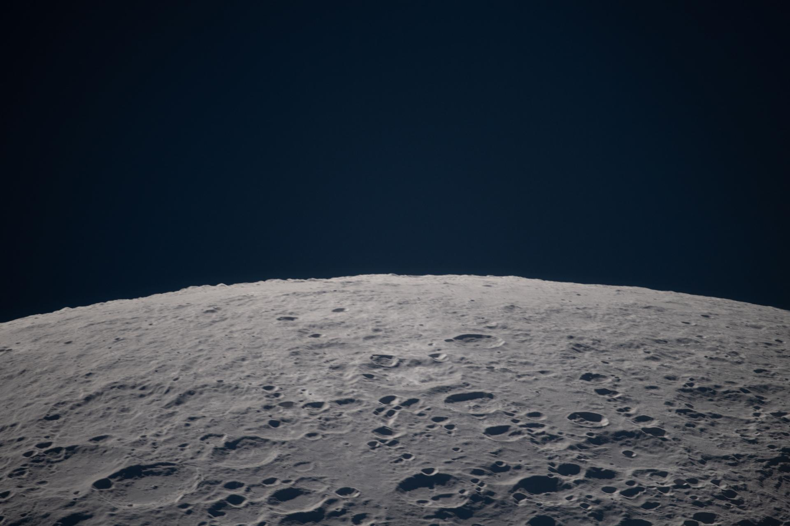
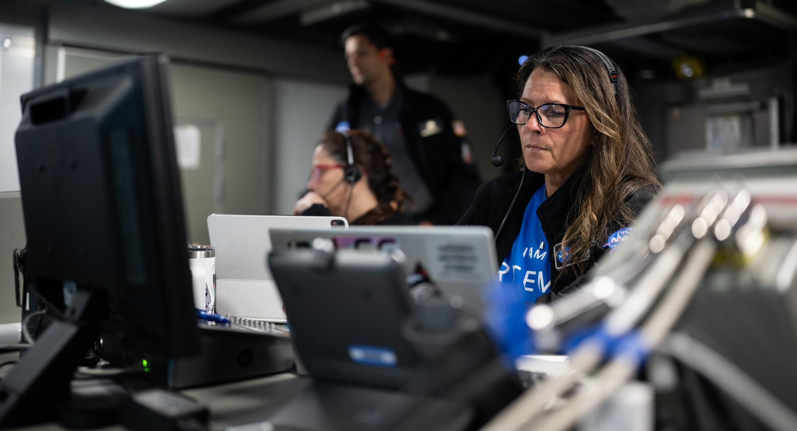

Built in Huntsville. Bound for the Moon.
Artemis I launched November 16, 2022 — the most powerful rocket ever flown, arcing into the night sky above Pad 39B at Kennedy Space Center. The uncrewed Orion capsule traveled 268,000 miles from Earth, swung 40,000 miles beyond the Moon, and splashed down in the Pacific on December 11. Twenty-five days in deep space. The first human-rated capsule to reach lunar distance since Apollo 17, fifty years before. Complete
Artemis II launched April 1, 2026 — carrying Reid Wiseman, Victor Glover, Christina Koch, and Jeremy Hansen on a nine-day free-return trajectory around the Moon. First humans to reach lunar distance since Apollo 17 in 1972. The crew set a new record: 406,771 km (252,756 mi) — the farthest any humans have ever traveled. Splashdown April 10, 2026. Complete
Artemis III has been redesigned. Instead of a lunar landing, the crew will test Human Landing Systems in Earth orbit — evaluating SpaceX Starship HLS and Blue Origin Blue Moon, and certifying the new AxEMU spacesuits. Target: mid-2027. The first crewed lunar landing is now planned for Artemis IV. Planned
Scroll to assemble the rocket. The most powerful launch vehicle ever built.
PRIMARY CONTRACTOR: CORE STAGE SYSTEMS ENGINEERING
PROPULSION · STRUCTURES · CRYOGENIC SYSTEMS
Built by Lockheed Martin, the Orion Multi-Purpose Crew Vehicle is the most capable deep-space human spacecraft ever constructed. Its European Service Module — contributed by the European Space Agency (ESA) — provides propulsion, power, thermal control, and consumables.
Orion carries up to four crew members for missions lasting up to 21 days in deep space. Its 5-meter heat shield — the largest ever flown — protected the capsule through 5,000°F reentry temperatures returning from lunar distance at Artemis I.
Where Apollo was a sprint, Orion is built for a sustained presence. The data from Artemis I's uncrewed return validated every thermal protection system assumption. The next crew to fly it will go farther than any human has gone since 1972.
The Lunar Gateway is humanity's first space station in lunar orbit — a waystation between Earth and the Moon's surface. Unlike the ISS, which orbits at 250 miles above Earth, Gateway will orbit the Moon in a Near-Rectilinear Halo Orbit (NRHO), dipping as low as 1,900 km above the lunar south pole at periapsis.
The first two components: the Power and Propulsion Element (PPE) built by Maxar Technologies, providing solar electric propulsion; and the Habitation and Logistics Outpost (HALO) built by Northrop Grumman, providing crew quarters, life support, and communication systems.
Subsequent missions will add modules from ESA (ESPRIT refueling module), JAXA (habitation), and CSA (Canadarm3). Gateway is international infrastructure — built to outlast any single mission and serve as the command post for sustained lunar exploration.
NRHO / PERIOD: ~6.5 DAYS / PERIAPSIS: ~1,900 KM / APOAPSIS: ~70,000 KM
For Artemis III, NASA selected SpaceX Starship as the Human Landing System. At 165 feet tall, it dwarfs the Apollo Lunar Module. Starship HLS will launch from Earth separately, await the crew in lunar orbit, descend to the south pole surface, and return the crew to Orion for the journey home.
SCALE COMPARISON — STARSHIP HLS IS 7× TALLER THAN THE APOLLO LM · NASA-SELECTED HLS PROVIDER FOR ARTEMIS III · IMAGE SOURCE: NASA / SPACEX (PUBLIC DOMAIN)
Marshall Space Flight Center is where America's rocket program lives. On the grounds of Redstone Arsenal in Huntsville, Alabama, MSFC has been the home of human space propulsion since Wernher von Braun moved his team here in 1950. They built the Saturn V. They managed the Space Shuttle Main Engines. And they are building SLS.
MSFC owns the core stage systems engineering for SLS — the engineering authority on propulsion, structures, and cryogenic systems for the most powerful rocket ever launched. Every weld in that core stage, every test at Stennis Space Center, every RS-25 certification flight runs through Huntsville.
This is not a supporting role. Marshall is the reason this rocket exists.
Scott worked on Artemis from the very beginning. Before the mission patch had a name, before the SLS stack had a final configuration, before the first weld on the core stage — he was there. Long hours in Huntsville on a rocket that would put humanity back on the Moon for the first time in half a century.
A stepfather. A quiet engineer. Part of the generation that said we will go back, and this time we will stay.
This page exists because he showed his family what it looks like to build something that matters. Every diagram on this site, every rivet in that rocket, has thousands of people like Scott behind it. This one's for him.
Chief of the NASA Astronaut Office. Flew on ISS Expedition 40/41 (2014). Naval test pilot and fighter pilot veteran.
Flew on Crew Dragon Resilience to ISS (2020). Naval aviator with 3,000+ flight hours.
Record holder for longest single spaceflight by a woman — 328 days on ISS (2019–2020).
CF-18 fighter pilot. Artemis II was his first spaceflight.
April 1–10, 2026 · 406,771 km from Earth · The farthest any human has ever traveled.

Earth rises above the lunar horizon, captured by the Artemis II crew during their seven-hour pass around the far side of the Moon.

First human-captured photographs of the Moon's far side on this mission — Vavilov Crater as no crew had ever seen it.

Orion splashes down at 8:07 p.m. EDT, completing humanity's first crewed lunar voyage since Apollo 17.
All imagery NASA public domain · images.nasa.gov
Scroll horizontally. Use arrow keys to navigate.